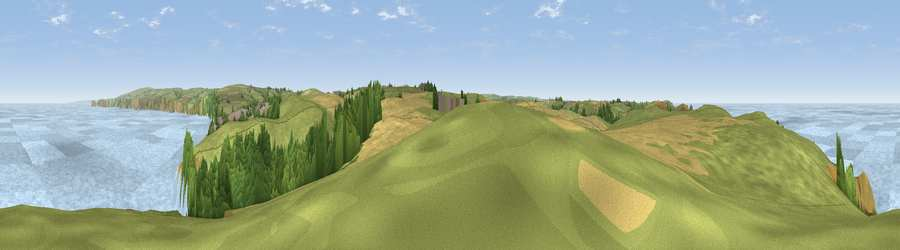

Viewpoint near Port Isaac
#4055 in England · top 12% of its area beats it · near Port IsaacThe view, rendered

A 360° render of this exact spot computed from the terrain model, tree cover and land cover — summer colours, afternoon light, calibrated against photographs of famous viewpoints. Real trees, hedges and buildings will differ in detail.
The panorama
Grey silhouette: terrain skyline in each direction (720 bearings, Earth curvature and refraction included). Dashed green: skyline with trees (+15 m) and buildings (+8 m) as obstacles. Blue strip: how far the ground is visible on each bearing.
Where the view opens
Wedge length = distance to the farthest visible ground on that bearing (vegetation-aware). Rings at 10, 25 and 50 km.
What fills the view
46% water · 35% grassland · 10% cropland · 9% woodland ·
Angular shares of the visible panorama (visual magnitude), not map area. Landscape diversity 0.52 (0–1 Shannon).
Key numbers
More beautiful places nearby
The staircase of upgrades: each row has a higher view potential than everything closer. Driving times are estimates from straight-line distance, calibrated against real road routing — check an actual route before setting out.
| Place | Direction | Drive | Score |
|---|---|---|---|
| Viewpoint near Port Isaac | SE · 1 km | ~2 min | 72.4 |
| Viewpoint near Port Isaac | W · 1 km | ~4 min | 76.5 |
| Viewpoint near Port Isaac | SSE · 2 km | ~6 min | 77.8 |
| Viewpoint near Port Isaac | E · 4 km | ~9 min | 79.7 |
| Viewpoint near Boscastle | NE · 13 km | ~23 min | 82.0 |
| Viewpoint near Boscastle | NE · 13 km | ~24 min | 84.3 |
| Viewpoint near Boscastle | NE · 14 km | ~25 min | 85.2 |
| Viewpoint near Boscastle | NE · 18 km | ~31 min | 85.8 |
50.59370, -4.84568 · source: screening · position refined by local search. Computed location — check access rights before visiting.